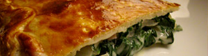

Krautstielpastete
5,5 von 6ca 500 g krautstiel im salzwasser planchieren, auskühlen und gut abtropfen. 200 g schinkenstreifen und
200 g emmentaler grob gerieben mit dem krautstiel in eine schüssel geben. 2 el mehl mit etwas butter
andünsten, 1,5 dl sauerrahm und ebensoviel kochwasser dazugiessen. mit knoblauch, salz, pfeffer und
etwas muskat würzen. sauce unter die krautstiele mischen. füllung auf ein mit kuchenteig belegtes blech
verteilen. teigrand mit eiweiss bestreichen und mit dem teigdeckel schliessen. mit eigelb anstreichen und
bei 200 grad ca. 30 minuten backen.
